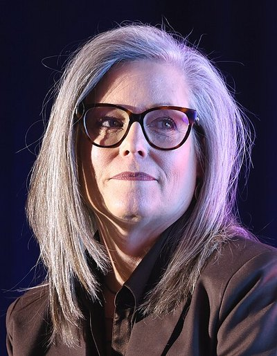

| 최신 여론조사 | ||||||
| 최신순 · 9건 · 양수 = 민주 우위(D+) | ||||||
| 조사기관 | 실사기간 | 모집단 | 표본 | 결과 | 마진 | 비고 |
|---|---|---|---|---|---|---|
| Arizona State University | ~2026-10-06 | — | — | Hobbs 47 – 34 Biggs | D+13 | end_date=공개일(실사기간 미수집)·10/6 목록 등재·표본·오차 미확보·출처=RCP 목록 |
| NextGenP | 2026-08-17 ~ 2026-08-19 | — | — | Hobbs 39 – 37.5 Biggs | D+1.5 | 미결정 22.2·표본·오차 미수집·Veridus 경유 확인 |
| HighGround | 2026-08-15 ~ 2026-08-18 | LV | 400 | Hobbs 49.5 – 34.3 Biggs | D+15.2 | ±4.9·피닉스 소재 컨설팅사(공화계 뿌리)의 자체 조사 — 캠프 의뢰 아님·무당파 54.5–19.3, 여성 56.7–28.8, 청년층 58.3–16.7·표본 400의 소규모가 유보 사항·Noble(비당파) D+13에 이은 두 번째 두 자릿수 |
| Quantus Insights (R 성향) | 2026-08-14 ~ 2026-08-17 | LV | 780 | Hobbs 49.1 – 43.2 Biggs | D+5.9 | 공화계 조사기관(원문 '공화계·유의')·양자 53.2-46.8 |
| Noble Predictive Insights | 2026-08-10 ~ 2026-08-13 | LV | 923 | Hobbs 48 – 35 Biggs | D+13 | ±3.2·비당파·빅스는 공화 결집 75%에 그침·홉스가 6개 이슈 중 5개 우위·8/21 홉스 페이투플레이 불기소 종결과 같은 주 |
| Stealth Analytics | 2026-08-11 ~ 2026-08-13 | LV | — | Hobbs 43 – 38 Biggs | D+5 | 미결정 18 |
| GrayHouse | 2026-08-09 ~ 2026-08-11 | — | — | Hobbs 49 – 45 Biggs | D+4 | 표본·오차 미수집·Veridus 경유 확인 |
| Noble Predictive Insights | 2026-05-05 ~ 2026-05-07 | RV | 996 | Hobbs 41 – 37 Biggs | D+4 | ±3.1·발표 5/18·7/21 경선 전 |
| TechnoMetrica(TIPP) (R 성향) | 2026-04-20 ~ 2026-04-24 | LV | 1159 | Hobbs 48 – 38 Biggs | D+10 | ±3.2·전체 RV 1,501의 LV 서브샘플·토플라인은 Newsweek 확인 |
| 출처 URL은 `data/governor_polls.csv`에 행별로 보관합니다(【수집】은 원문 URL 확인 중). 당파 후원(D/R 성향) 조사는 공개 선택 편향이 있으니 단일 조사보다 여러 조사의 방향을 함께 보세요. 표는 데이터에서 자동 렌더되며 새 조사가 들어오면 갱신됩니다. | ||||||
| 이번 주 판독 — **7주 가까운 조사 공백이 D+13으로 끝났다.** ASU 조사가 원천이 앞서 기록한 Noble D+13과 같은 크기로 나왔다. 조기투표는 10/7 개시됐다. 다만 같은 주 Kalshi 홉스 가격은 90¢에서 85¢로 내렸다 — 조사와 시장이 반대로 움직인 사례다. 주의회(AZ 상·하원)는 토스업 체임버로 변동 없음. | ||||||
애리조나 주지사 Arizona Governor
민주 현직 Katie Hobbs가 공화 Andy Biggs를 상대로 자리를 지키는 선거입니다. Hobbs는 2022년 Kari Lake를 0.7%p 차로 꺾었습니다. Biggs는 7/21 공화 경선에서 73.6%로 이겼고, 온건 후보 Karrin Taylor Robson은 경선 전에 물러났습니다. 3사 등급은 모두 민주 쪽(Lean D·Tilt D)입니다.
Hobbs (D·현직) vs Biggs (R) · AZ
민주 방어Cook Lean D 10-01Sabato Lean D 10-09IE Tilt D 10-02Kalshi 민주 85¢ 10-11
조사 마진 추이 (양수 = 민주 우위 · 속 빈 점 = 당파 후원 조사)
데이터 기준 2026-10-13 자금은 주(州) 선관위 신고 기준(연방 FEC 아님).
- 구도: 민주 현직 방어. Hobbs(전 주 국무장관) 대 Biggs(연방하원 AZ-05 5선, 프리덤코커스).
- 흐름: 8월 이후 7주 가까이 조사가 없다가 10월 첫 주 ASU 조사가 Hobbs 우위로 나왔습니다. 조기투표는 10/7에 시작됐습니다.
- 한국 함의: 후보 발언은 미확인입니다. LG에너지솔루션 배터리 단지가 있는 주라 주지사의 인허가·인센티브 권한이 닿습니다.
등급 이동 이력 — 출발점(2026-08-03): Cook Lean D · Sabato Lean D · IE Toss-up
- 2026-09-07 · IE Toss-up → Tilt D
날짜는 이 사이트의 주간 등급 스냅샷 취득일이며 기관 발표일보다 최대 1주 늦을 수 있습니다. 원천: 270towin 재게시 피드의 주간 스냅샷.

케이티 홉스 Katie Hobbs민주 · 현직
1969년생(57세) · 애리조나 주지사(2023~) · 전 주 국무장관·사회복지사
가족 남편 Pat, 자녀 둘
학력 노던애리조나대 사회복지 학사, 애리조나주립대(ASU) 사회복지 석사
경력 2022 주지사 50.3% vs Lake 49.6%(0.7%p) · 2018 주 국무장관 50.4% · 주상원 3선
펀드레이징 Q2 모금 $2.6M · 잔고 $2.4M(선제 광고로 지출 $7.4M) + DGA $10M 투입(주 선관위 신고·KJZZ)
강점
- 현직 프리미엄 · 2022 최격전지 승리 경험
- 공화 주의회 상대 거부권 정치로 온건 이미지
- 상대(빅스)의 강경 포지셔닝 반사이익
약점
- 2022년 0.7%p 신승 — 기반 취약
- 낮은 카리스마·토론 회피 논란(2022)
- 트럼프가 2024년 5.5%p 이긴 주
정책 낙태권 보호 · 주택·생활비 · 물(콜로라도강) 문제 · 보육·교육
🇰🇷 한국 함의 한국 관련 직접 입장은 공개 출처에서 확인되지 않음
앤디 빅스 Andy Biggs공화
1958년생(68세) · 연방하원의원 AZ-05 5선(2017~) · 전 주상원의장 · 변호사
가족 부인 Cindy, 자녀 여섯(딸 1명 2025년 별세)
학력 BYU 학사, 애리조나대 JD, ASU 석사
경력 하원 5연승(56.7~64.1%) · 2026-07-21 경선 73.6% 압승 — 2위는 David Schweikert(연방하원 AZ-01), 그 외 Neely·Miceli. 롭슨은 경선 전 사퇴
펀드레이징 모금 $0.9M · 잔고 $1.2M (주 선관위 신고, 7/16 — 홉스 대비 열세)
강점
- 프리덤코커스 전 의장급 인지도·강성 보수 결집
- 의정 경력 20년+
- MAGA 조직 장악
약점
- 2021-01-06 선거인단 인증 반대 표결 — 본선 부담
- 경합주 중도층에 불리한 강경 노선
- 주 전체 선거 첫 도전
정책 국경 통제 · 연방지출 삭감·감세 · 규제 완화 · 선거 보안
🇰🇷 한국 함의 한국 관련 직접 입장은 공개 출처에서 확인되지 않음
Biggs는 2021-01-06 선거인단 인증에 반대표를 던진 의원입니다. 그래서 선거 신뢰가 다시 핵심 전선이 될 가능성이 큽니다. Hobbs는 공화 주의회를 상대로 거부권을 써 온 현직입니다. 국경과 콜로라도강 물 문제에서는 중도 노선을 유지해 왔습니다.
- 9/22 · 기타 · Biggs가 소득세 폐지·데이터센터 세제 혜택 종료·ESA 확대를 담은 첫 전체 공약을 냈고, Hobbs 캠프는 ’사실상 23% 판매세’라고 반박했다. (출처) 페어택스 산정 대조 필요 (수집)
- 9/17 · 기타 · Biggs가 백신 의무 종료·SNAP 정크푸드 제한·이버멕틴 OTC 등 MAHA 성향 보건 공약 12개를 발표해 AZ 첫 정체성 축을 열었다. (출처)
- 8/30 보도 · 토론 · Hobbs가 Biggs와의 토론을 공식 거부했습니다(AZ Free News 보도). (출처)
- 8/24 · 조사 · HighGround(8/15~18, LV 400)에서 Hobbs 49.5 – Biggs 34.3(D+15.2)이 나왔고, 같은 주 다른 조사는 D+1.5~5로 폭이 크게 벌어졌다. (출처) 피닉스 컨설팅사 자체 조사
- 8/21 · 기타 · 애리조나 법무장관이 2년 만에 Hobbs의 ‘페이투플레이’ 수사를 대가성 증거 없음으로 불기소 종결해 공화의 최대 공격 소재가 사라졌다. (출처)
- 8/13 · 조사 · Noble Predictive(비당파, 8/10~13, LV 923)에서 Hobbs 48 – Biggs 35(D+13)가 나왔다. (출처)
- 8/11 · 기타 · Hobbs가 전 공화 메사 시장 John Giles(LDS)를 러닝메이트로 발탁해 같은 신앙의 Biggs와의 대결에서 정치적 온도를 낮추려 했다. (출처)
- 8/7 · 조사 · AARP 조사에서 Hobbs 52 – Biggs 44(D+8, ±3.2)로 Biggs 지명 후 첫 실측이 나왔다. (출처) 필드 일자 미공개·유보
원천: _NIS 주정부 주간·일일 브리핑(주간 2026-08-02~10-11)에서 출처 링크가 붙은 사건만 옮겼습니다. 원천 문장을 옮긴 기록이라 다체로 둡니다. 기록 기준 2026-10-11.
경선 전 조사와 경선 후 조사가 섞여 있습니다. 실사 기간을 보고 7/21 이후 조사만 현 대진의 근거로 읽으세요.
최신 자금 상황 (기준 2026-10-13 · 주 선관위 신고 — 연방 FEC 아님) — 자원배분 약 15:1 민주 불변(빅스+주 공화당 3주 집행 $175만 vs 홉스 플랫폼 우위) · Hobbs Q2 모금 $2.6M·잔고 $2.4M vs Biggs $0.9M·잔고 $1.2M(주 선관위, 이월) + DGA $10M 투입 발표
Hobbs는 광고를 일찍 집행해 잔고만 보면 격차가 작아 보입니다. 모금 흐름과 민주당주지사협회(DGA)의 외부 투입까지 더하면 민주 우위입니다. 주지사 선거 자금은 연방 FEC가 아니라 주 선관위 신고라서 자동 취득이 없습니다.
애리조나에는 이 사이트의 상원 페이지가 없어서 제도를 여기에 정리합니다.
- 선거 관리 3역 동시 선출: 주지사, 국무장관(Fontes 재선 도전), 법무장관(Mayes 재선 도전)을 모두 이번에 뽑습니다. 2028년 대선의 개표 인증과 선거 소송 대응을 맡을 자리입니다.
- 경선: 무당파 유권자가 한 정당의 투표용지를 골라 참여하는 준개방형입니다.
- 임기: 연속 2선 제한입니다. Hobbs는 첫 재선 도전이라 제한과 무관합니다.
- 부지사 신설: 2022년 Prop 131 통과로 이번이 부지사 러닝메이트 동반 출마 첫 선거입니다. 그전에는 주지사 유고 시 국무장관이 승계했습니다.
- 역대 주지사 결과: 이 사이트의 40년 선거 결과 자료에는 아직 애리조나가 없습니다. 수집을 요청해 두었습니다.
후보들의 한국 관련 직접 발언·공약은 확인되지 않았습니다. 투자 쪽 연결은 확정돼 있습니다. LG에너지솔루션이 Queen Creek에 $5.5B 규모 배터리 복합단지를 발표했습니다(2024-04). 2025년 8월 기준 약 60% 완공이었고 2026년 여름 생산 개시 예정이었습니다. 반도체 클러스터와 함께 주지사의 인허가·세제 인센티브·전력 요금 권한이 한국 기업 투자 환경에 직접 닿습니다. 관련 발언이 나오면 Korea Watch에 기록합니다.